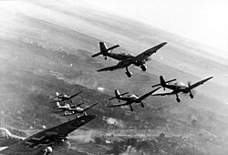

Luftwaffe to niemieckie lotnictwo wojskowe podczas II wojny światowej. Powstało w 1935 roku. Jego zadaniem było atakowanie celów z powietrza i wspieranie niemieckiej armii.

Messerschmitt Bf 109 był niemieckim myśliwcem. Junkers Ju 87 był bombowcem nurkującym. Heinkel He 111 był używany do bombardowania.
Dowódcą Luftwaffe był Hermann Göring. Niemieckie lotnictwo brało udział w bitwie o Anglię w 1940 roku.